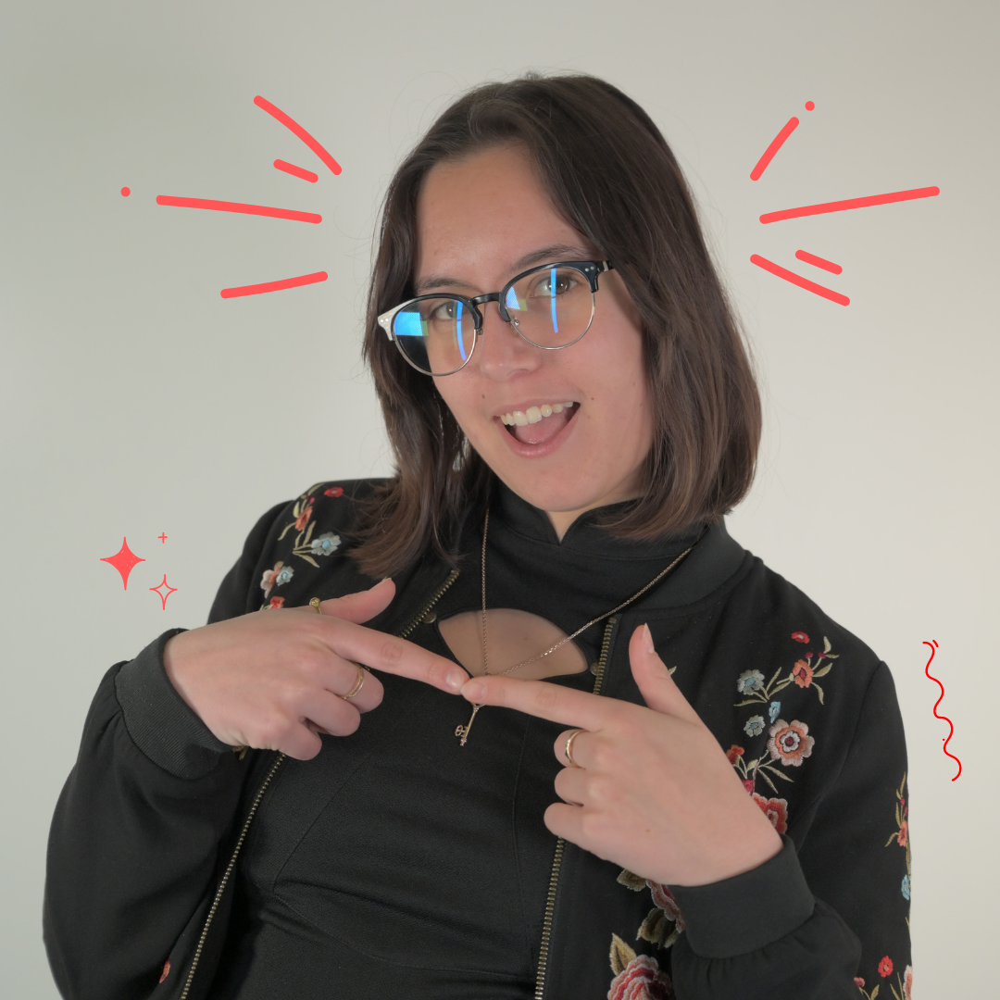
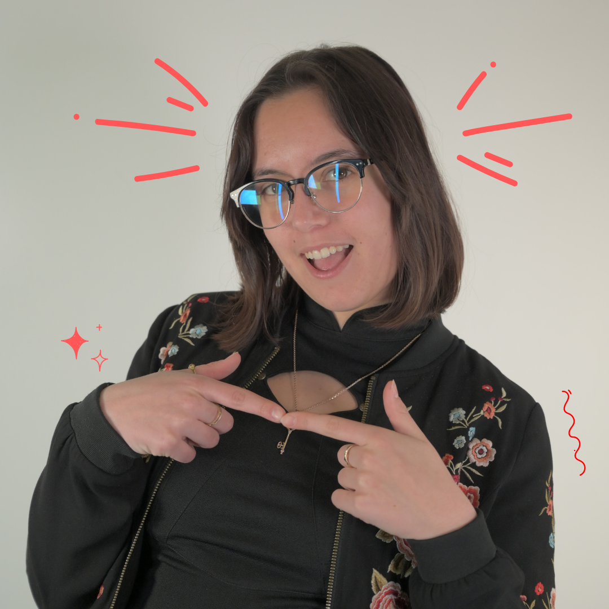

Etudiante en multimédia, j’utilise mes compétences pluridisciplinaire pour varier mes créations !
Etant perfectionniste dans l’âme, j’aime varier les projets et découvrir de nouveaux domaines.
Développement web
Création numérique
Gestion de projet
Actuellement étudiante en MMI à l'IUT de Chambéry, je me spécialise dans le développement web et la gestion de projet. Mais je suis avant tout un couteau suisse et j'aiguise mes fonctionnalités. Je suis une personne polyvalente et motivée qui aime apprendre de nouvelles choses.
👉Quand je suis arrivée en MMI, je ne connaissais rien au multimédia mais cela m'a tout de suite plu. J'aime apprendre de nouvelles choses et les tous domaines de ma formation m'intéressent. Par ailleurs, j'ai acheté une caméra pour m'entraîner au montage et à la photographie.
👉 J'aime beaucoup le travail d'équipe et arrive toujours à m'adapter en fonction des autres. Je suis devenue "chef de projet" au cours d'un projet car j'ai su montrer que j'étais motivée et impliquée dans le groupe. Depuis, c'est un des rôle dans lequels je me sens le mieux !
👉Je suis une personne multifonction et que je cherche toujours à en apprendre plus, donc soyez mon nouveau défi !
 

Mail : laly.teissier@gmail.com